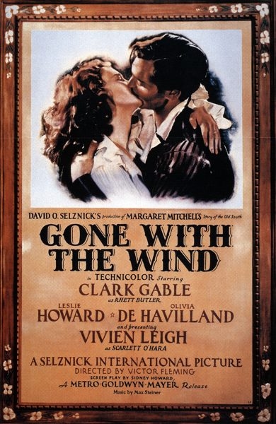

THE STANFORD THEATRE
Now Showing
·
Upcoming
·
Past
·
Search
November 7 - 21, 2014
Gone With the Wind 75th Anniversary
3 bills
November 7 - 9

Gone With the Wind (1939)
238 min
November 10 - 16
Gone With the Wind (1939)
238 min
November 17 - 21
Gone With the Wind (1939)
238 min
Archived calendar page
·
Original
·
All past festivals